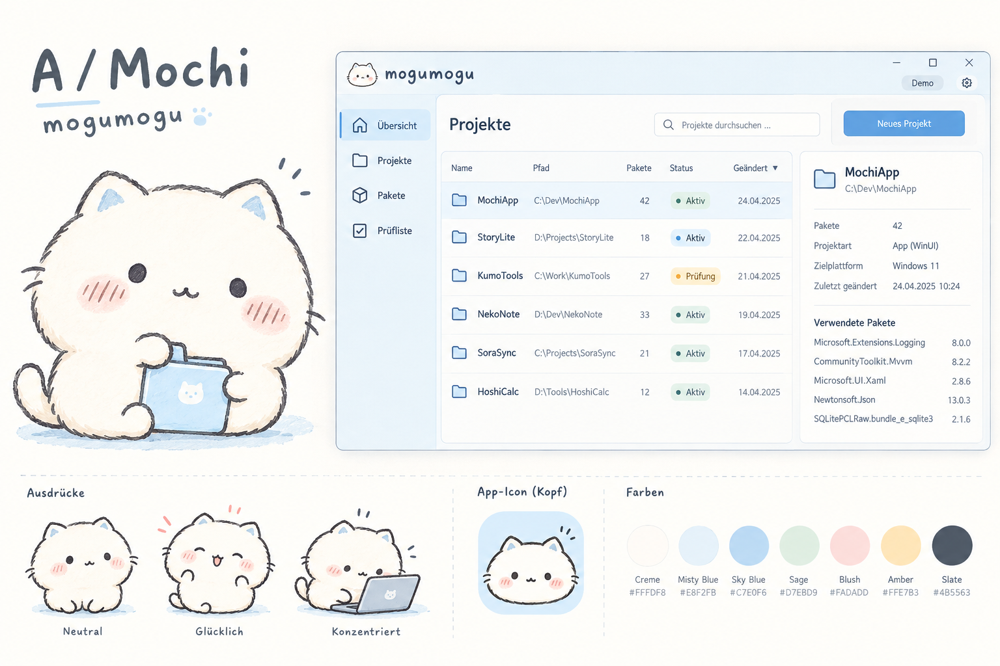

AI-generated mascot and Windows application studies

Visual studies with synthetic data. The illustrated application text is not a feature specification. GPT Image 2.5 was requested; this session’s built-in generator does not expose its model identifier, so the exact backend version is unverified.